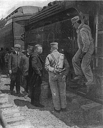
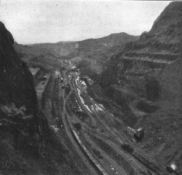
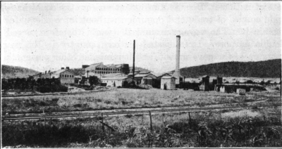
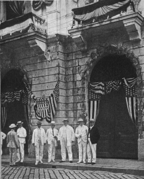
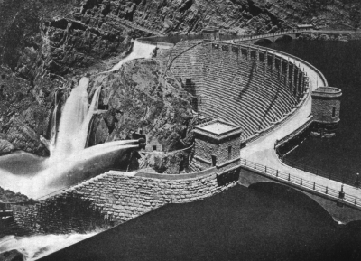

THE EVOLUTION OF REPUBLICAN POLICIES (1901-13)
The Personality and Early Career of Roosevelt. —On September 14, 1901, when Theodore Roosevelt took the oath of office, the presidency passed to a new generation and a leader of a new type recalling, if comparisons must be made, Andrew Jackson rather than any Republican predecessor. Roosevelt was brusque, hearty, restless, and fond of action—"a young fellow of infinite dash and originality," as John Hay remarked of him; combining the spirit of his old college, Harvard, with the breezy freedom of the plains; interested in everything—a new species of game, a new book, a diplomatic riddle, or a novel theory of history or biology. Though only forty-three years old he was well versed in the art of practical politics.
Coming upon the political scene in the early eighties, he had associated himself with the reformers in the Republican party; but he was no Mugwump. From the first he vehemently preached the doctrine of party loyalty; if beaten in the convention, he voted the straight ticket in the election. For twenty years he adhered to this rule and during a considerable portion of that period he held office as a spokesman of his party. He

served in the New York legislature, as head of the metropolitan police force, as federal civil service commissioner under President Harrison, as assistant secretary of the navy under President McKinley, and as governor of the Empire state. Political managers of the old school spoke of him as "brilliant but erratic"; they soon found him equal to the shrewdest in negotiation and action.
Copyright by Underwood and Underwood, N.Y.
Roosevelt Talking to the Engineer of a Railroad Train
Foreign Affairs
The Panama Canal. —The most important foreign question confronting President Roosevelt on the day of his inauguration, that of the Panama Canal, was a heritage from his predecessor. The idea of a water route across the isthmus, long a dream of navigators, had become a living issue after the historic voyage of the battleship Oregon around South America during the Spanish War. But before the United States could act it had to undo the Clayton-Bulwer treaty, made with Great Britain in 1850, providing for the construction of the canal under joint supervision. This was finally effected by the Hay-Pauncefote treaty of 1901
authorizing the United States to proceed alone, on condition that there should be no discriminations against other nations in the matter of rates and charges.
This accomplished, it was necessary to decide just where the canal should be built. One group in Congress favored the route through Nicaragua; in fact, two official commissions had already approved that location.
Another group favored cutting the way through Panama after purchasing the rights of the old French company which, under the direction of De Lesseps, the hero of the Suez Canal, had made a costly failure some twenty years before. After a heated argument over the merits of the two plans, preference was given to the Panama route. As the isthmus was then a part of Colombia, President Roosevelt proceeded to negotiate with the government at Bogota a treaty authorizing the United States to cut a canal through its territory. The treaty was easily framed, but it was rejected by the Colombian senate, much to the President's exasperation. "You could no more make an agreement with the Colombian rulers," he exclaimed, "than you could nail jelly to a wall." He was spared the necessity by a timely revolution. On November 3, 1903, Panama renounced its allegiance to Colombia and three days later the United States recognized its independence.

Courtesy of Panama Canal, Washington, D.C.
Deepest Excavated Portion of Panama Canal, Showing Gold Hill on Right and Contractor's Hill on Left.
June, 1913
This amazing incident was followed shortly by the signature of a treaty between Panama and the United States in which the latter secured the right to construct the long-discussed canal, in return for a guarantee of independence and certain cash payments. The rights and property of the French concern were then bought, and the final details settled. A lock rather than a sea-level canal was agreed upon. Construction by the government directly instead of by private contractors was adopted. Scientific medicine was summoned to stamp out the tropical diseases that had made Panama a plague spot. Finally, in 1904, as the President said, "the dirt began to fly." After surmounting formidable difficulties—engineering, labor, and sanitary—the American forces in 1913 joined the waters of the Atlantic and the Pacific. Nearly eight thousand miles were cut off the sea voyage from New York to San Francisco. If any were inclined to criticize President Roosevelt for the way in which he snapped off negotiations with Colombia and recognized the Panama revolutionists, their attention was drawn to the magnificent outcome of the affair.
Notwithstanding the treaty with Great Britain, Congress passed a tolls bill discriminating in rates in favor of American ships. It was only on the urgent insistence of President Wilson that the measure was later repealed.
The Conclusion of the Russo-Japanese War. —The applause which greeted the President's next diplomatic stroke was unmarred by censure of any kind. In the winter of 1904 there broke out between Japan and Russia a terrible conflict over the division of spoils in Manchuria. The fortunes of war were with the agile forces of Nippon. In this struggle, it seems, President Roosevelt's sympathies were mainly with the Japanese, although he observed the proprieties of neutrality. At all events, Secretary Hay wrote in his diary on New Year's Day, 1905, that the President was "quite firm in his view that we cannot permit Japan to be robbed a second time of her victory," referring to the fact that Japan, ten years before, after defeating China on the field of battle, had been forced by Russia, Germany, and France to forego the fruits of conquest.
Whatever the President's personal feelings may have been, he was aware that Japan, despite her triumphs over Russia, was staggering under a heavy burden of debt. At a suggestion from Tokyo, he invited both belligerents in the summer of 1905 to join in a peace conference. The celerity of their reply was aided by the pressure of European bankers, who had already come to a substantial agreement that the war must stop.
After some delay, Portsmouth, New Hampshire, was chosen as the meeting place for the spokesmen of the
two warring powers. Roosevelt presided over the opening ceremonies with fine urbanity, thoroughly enjoying the justly earned honor of being for the moment at the center of the world's interest. He had the satisfaction of seeing the conference end in a treaty of peace and amity.
The Monroe Doctrine Applied to Germany. —Less spectacular than the Russo-Japanese settlement but not less important was a diplomatic passage-at-arms with Germany over the Monroe Doctrine. This clash grew out of the inability or unwillingness of the Venezuelan government to pay debts due foreign creditors. Having exhausted their patience in negotiations, England and Germany, in December 1901, sent battleships to establish what they characterized as "a peaceful blockade" of Venezuelan ports. Their action was followed by the rupture of diplomatic relations; there was a possibility that war and the occupation of Venezuelan territory might result.
While unwilling to stand between a Latin-American country and its creditors, President Roosevelt was determined that debt collecting should not be made an excuse for European countries to seize territory. He therefore urged arbitration of the dispute, winning the assent of England and Italy. Germany, with a somewhat haughty air, refused to take the milder course. The President, learning of this refusal, called the German ambassador to the White House and informed him in very precise terms that, unless the Imperial German Government consented to arbitrate, Admiral Dewey would be ordered to the scene with instructions to prevent Germany from seizing any Venezuelan territory. A week passed and no answer came from Berlin. Not baffled, the President again took the matter up with the ambassador, this time with even more firmness; he stated in language admitting of but one meaning that, unless within forty-eight hours the Emperor consented to arbitration, American battleships, already coaled and cleared, would sail for Venezuelan waters. The hint was sufficient. The Kaiser accepted the proposal and the President, with the fine irony of diplomacy, complimented him publicly on "being so stanch an advocate of arbitration." In terms of the Monroe Doctrine this action meant that the United States, while not denying the obligations of debtors, would not permit any move on the part of European powers that might easily lead to the temporary or permanent occupation of Latin-American territory.
The Santo Domingo Affair. —The same issue was involved in a controversy over Santo Domingo which arose in 1904. The Dominican republic, like Venezuela, was heavily in debt, and certain European countries declared that, unless the United States undertook to look after the finances of the embarrassed debtor, they would resort to armed coercion. What was the United States to do? The danger of having some European power strongly intrenched in Santo Domingo was too imminent to be denied. President Roosevelt acted with characteristic speed, and notwithstanding strong opposition in the Senate was able, in 1907, to effect a treaty arrangement which placed Dominican finances under American supervision.
In the course of the debate over this settlement, a number of interesting questions arose. It was pertinently asked whether the American navy should be used to help creditors collect their debts anywhere in Latin-America. It was suggested also that no sanction should be given to the practice among European governments of using armed force to collect private claims. Opponents of President Roosevelt's policy, and they were neither few nor insignificant, urged that such matters should be referred to the Hague Court or to special international commissions for arbitration. To this the answer was made that the United States could not surrender any question coming under the terms of the Monroe Doctrine to the decision of an international tribunal. The position of the administration was very clearly stated by President Roosevelt himself. "The country," he said, "would certainly decline to go to war to prevent a foreign government from collecting a just debt; on the other hand, it is very inadvisable to permit any foreign power to take possession, even temporarily, of the customs houses of an American republic in order to enforce the payment of its obligations; for such a temporary occupation might turn into a permanent occupation. The only escape from these alternatives may at any time be that we must ourselves undertake to bring about some arrangement by which so much as possible of a just obligation shall be paid." The Monroe Doctrine was negative. It denied to European powers a certain liberty of operation in this hemisphere. The positive obligations resulting from its application by the United States were points now emphasized and developed.
The Hague Conference. —The controversies over Latin-American relations and his part in bringing the Russo-Japanese War to a close naturally made a deep impression upon Roosevelt, turning his mind in the direction of the peaceful settlement of international disputes. The subject was moreover in the air. As if conscious of impending calamity, the statesmen of the Old World, to all outward signs at least, seemed searching for a way to reduce armaments and avoid the bloody and costly trial of international causes by the ancient process of battle. It was the Czar, Nicholas II, fated to die in one of the terrible holocausts which he helped to bring upon mankind, who summoned the delegates of the nations in the first Hague Peace Conference in 1899. The conference did nothing to reduce military burdens or avoid wars but it did recognize the right of friendly nations to offer the services of mediation to countries at war and did establish a Court at the Hague for the arbitration of international disputes.
Encouraged by this experiment, feeble as it was, President Roosevelt in 1904 proposed a second conference, yielding to the Czar the honor of issuing the call. At this great international assembly, held at the Hague in 1907, the representatives of the United States proposed a plan for the compulsory arbitration of certain matters of international dispute. This was rejected with contempt by Germany. Reduction of armaments, likewise proposed in the conference, was again deferred. In fact, nothing was accomplished beyond agreement upon certain rules for the conduct of "civilized warfare," casting a somewhat lurid light upon the "pacific" intentions of most of the powers assembled.
The World Tour of the Fleet. —As if to assure the world then that the United States placed little reliance upon the frail reed of peace conferences, Roosevelt the following year (1908) made an imposing display of American naval power by sending a fleet of sixteen battleships on a tour around the globe. On his own authority, he ordered the ships to sail out of Hampton Roads and circle the earth by way of the Straits of Magellan, San Francisco, Australia, the Philippines, China, Japan, and the Suez Canal. This enterprise was not, as some critics claimed, a "mere boyish flourish." President Roosevelt knew how deep was the influence of sea power on the fate of nations. He was aware that no country could have a wide empire of trade and dominion without force adequate to sustain it. The voyage around the world therefore served a double purpose. It interested his own country in the naval program of the government, and it reminded other powers that the American giant, though quiet, was not sleeping in the midst of international rivalries.
Colonial Administration
A Constitutional Question Settled. —In colonial administration, as in foreign policy, President Roosevelt advanced with firm step in a path already marked out. President McKinley had defined the principles that were to control the development of Porto Rico and the Philippines. The Republican party had announced a program of pacification, gradual self-government, and commercial improvement. The only remaining question of importance, to use the popular phrase,—"Does the Constitution follow the flag?"—had been answered by the Supreme Court of the United States. Although it was well known that the Constitution did not contemplate the government of dependencies, such as the Philippines and Porto Rico, the Court, by generous and ingenious interpretations, found a way for Congress to apply any reasonable rules required by the occasion.

Photograph from Underwood and Underwood, N.Y.
A Sugar Mill, Porto Rico
Porto Rico. —The government of Porto Rico was a relatively simple matter. It was a single island with a fairly homogeneous population apart from the Spanish upper class. For a time after military occupation in 1898, it was administered under military rule. This was succeeded by the establishment of civil government under the "organic act" passed by Congress in 1900. The law assured to the Porto Ricans American protection but withheld American citizenship—a boon finally granted in 1917. It provided for a governor and six executive secretaries appointed by the President with the approval of the Senate; and for a legislature of two houses—one elected by popular native vote, and an upper chamber composed of the executive secretaries and five other persons appointed in the same manner. Thus the United States turned back to the provincial system maintained by England in Virginia or New York in old colonial days. The natives were given a voice in their government and the power of initiating laws; but the final word both in lawmaking and administration was vested in officers appointed in Washington. Such was the plan under which the affairs of Porto Rico were conducted by President Roosevelt. It lasted until the new organic act of 1917.
The Philippines. —The administration of the Philippines presented far more difficult questions. The number of islands, the variety of languages and races, the differences in civilization all combined to challenge the skill of the government. Moreover, there was raging in 1901 a stubborn revolt against American authority, which had to be faced. Following the lines laid down by President McKinley, the evolution of American policy fell into three stages. At first the islands were governed directly by the President under his supreme military power. In 1901 a civilian commission, headed by William Howard Taft, was selected by the President and charged with the government of the provinces in which order had been restored. Six years later, under the terms of an organic act, passed by Congress in 1902, the third stage was reached. The local government passed into the hands of a governor and commission, appointed by the President and Senate, and a legislature—one house elected by popular vote and an upper chamber composed of the commission. This scheme, like that obtaining in Porto Rico, remained intact until a Democratic Congress under President Wilson's leadership carried the colonial administration into its fourth phase by making both houses elective. Thus, by the steady pursuit of a liberal policy, self-government was extended to the dependencies; but it encouraged rather than extinguished the vigorous movement among the Philippine natives for independence.

Copyright by Underwood and Underwood, N.Y.
Mr Taft in the Philippines
Cuban Relations. —Within the sphere of colonial affairs, Cuba, though nominally independent, also presented problems to the government at Washington. In the fine enthusiasm that accompanied the declaration of war on Spain, Congress, unmindful of practical considerations, recognized the independence of Cuba and disclaimed "any disposition or intention to exercise sovereignty, jurisdiction, or control over said island except for the pacification thereof." In the settlement that followed the war, however, it was deemed undesirable to set the young republic adrift upon the stormy sea of international politics without a guiding hand. Before withdrawing American troops from the island, Congress, in March, 1901, enacted, and required Cuba to approve, a series of restrictions known as the Platt amendment, limiting her power to incur indebtedness, securing the right of the United States to intervene whenever necessary to protect life and property, and reserving to the United States coaling stations at certain points to be agreed upon. The Cubans made strong protests against what they deemed "infringements of their sovereignty"; but finally with good grace accepted their fate. Even when in 1906 President Roosevelt landed American troops in the island to quell a domestic dissension, they acquiesced in the action, evidently regarding it as a distinct warning that they should learn to manage their elections in an orderly manner.
The Roosevelt Domestic Policies
Social Questions to the Front. —From the day of his inauguration to the close of his service in 1909, President Roosevelt, in messages, speeches, and interviews, kept up a lively and interesting discussion of trusts, capital, labor, poverty, riches, lawbreaking, good citizenship, and kindred themes. Many a subject previously touched upon only by representatives of the minor and dissenting parties, he dignified by a careful examination. That he did this with any fixed design or policy in mind does not seem to be the case.
He admitted himself that when he became President he did not have in hand any settled or far-reaching plan of social betterment. He did have, however, serious convictions on general principles. "I was bent upon making the government," he wrote, "the most efficient possible instrument in helping the people of the United States to better themselves in every way, politically, socially, and industrially. I believed with all my heart in real and thorough-going democracy and I wished to make the democracy industrial as well as political, although I had only partially formulated the method I believed we should follow." It is thus evident at least that he had departed a long way from the old idea of the government as nothing but a great policeman keeping order among the people in a struggle over the distribution of the nation's wealth and
Roosevelt's View of the Constitution. —Equally significant was Roosevelt's attitude toward the Constitution and the office of President. He utterly repudiated the narrow construction of our national charter. He held that the Constitution "should be treated as the greatest document ever devised by the wit of man to aid a people in exercising every power necessary for its own betterment, not as a strait-jacket cunningly fashioned to strangle growth." He viewed the presidency as he did the Constitution. Strict constructionists of the Jeffersonian school, of whom there were many on occasion even in the Republican party, had taken a view that the President could do nothing that he was not specifically authorized by the Constitution to do. Roosevelt took exactly the opposite position. It was his opinion that it was not only the President's right but his duty "to do anything that the needs of the nation demanded unless such action was forbidden by the Constitution or the laws." He went on to say that he acted "for the common well-being of all our people whenever and in whatever manner was necessary, unless prevented by direct constitutional or legislative prohibition."
The Trusts and Railways. —To the trust question, Roosevelt devoted especial attention. This was unavoidable. By far the larger part of the business of the country was done by corporations as distinguished from partnerships and individual owners. The growth of these gigantic aggregations of capital had been the leading feature in American industrial development during the last two decades of the nineteenth century. In the conquest of business by trusts and "the resulting private fortunes of great magnitude," the Populists and the Democrats had seen a grievous danger to the republic. "Plutocracy has taken the place of democracy; the tariff breeds trusts; let us destroy therefore the tariff and the trusts"—such was the battle cry which had been taken up by Bryan and his followers.
President Roosevelt countered vigorously. He rejected the idea that the trusts were the product of the tariff or of governmental action of any kind. He insisted that they were the outcome of "natural economic forces": (1) destructive competition among business men compelling them to avoid ruin by coöperation in fixing prices; (2) the growth of markets on a national scale and even international scale calling for vast accumulations of capital to carry on such business; (3) the possibility of immense savings by the union of many plants under one management. In the corporation he saw a new stage in the development of American industry. Unregulated competition he regarded as "the source of evils which all men concede must be remedied if this civilization of ours is to survive." The notion, therefore, that these immense business concerns should be or could be broken up by a decree of law, Roosevelt considered absurd.
At the same time he proposed that "evil trusts" should be prevented from "wrong-doing of any kind"; that is, punished for plain swindling, for making agreements to limit output, for refusing to sell to customers who dealt with rival firms, and for conspiracies with railways to ruin competitors by charging high freight rates and for similar abuses. Accordingly, he proposed, not the destruction of the trusts, but their regulation by the government. This, he contended, would preserve the advantages of business on a national scale while preventing the evils that accompanied it. The railway company he declared to be a public servant. "Its rates should be just to and open to all shippers alike." So he answered those who thought that trusts and railway combinations were private concerns to be managed solely by their owners without let or hindrance and also those who thought trusts and railway combinations could be abolished by tariff reduction or criminal prosecution.
The Labor Question. —On the labor question, then pressing to the front in public interest, President Roosevelt took advanced ground for his time. He declared that the working-man, single-handed and empty-handed, threatened with starvation if unemployed, was no match for the employer who was able to bargain and wait. This led him, accordingly, to accept the principle of the trade union; namely, that only by collective bargaining can labor be put on a footing to measure its strength equally with capital. While he severely arraigned labor leaders who advocated violence and destructive doctrines, he held that "the organization of labor into trade unions and federations is necessary, is beneficent, and is one of the greatest
possible agencies in the attainment of a true industrial, as well as a true political, democracy in the United States." The last resort of trade unions in labor disputes, the strike, he approved in case negotiations failed to secure "a fair deal."
He thought, however, that labor organizations, even if wisely managed, could not solve all the pressing social questions of the time. The aid of the government at many points he believed to be necessary to eliminate undeserved poverty, industrial diseases, unemployment, and the unfortunate consequences of industrial accidents. In his first message of 1901, for instance, he urged that workers injured in industry should have certain and ample compensation. From time to time he advocated other legislation to obtain what he called "a larger measure of social and industrial justice."
Great Riches and Taxation. —Even the challenge of the radicals, such as the Populists, who alleged that
"the toil of millions is boldly stolen to build up colossal fortunes for a few"—challenges which his predecessors did not consider worthy of notice—President Roosevelt refused to let pass without an answer. In his first message he denied the truth of the common saying that the rich were growing richer and the poor were growing poorer. He asserted that, on the contrary, the average man, wage worker, farmer, and small business man, was better off than ever before in the history of our country. That there had been abuses in the accumulation of wealth he did not pretend to ignore, but he believed that even immense fortunes, on the whole, represented positive benefits conferred upon the country. Nevertheless he felt that grave dangers to the safety and the happiness of the people lurked in great inequalities of wealth.
In 1906 he wrote that he wished it were in his power to prevent the heaping up of enormous fortunes. The next year, to the astonishment of many leaders in his own party, he boldly announced in a message to Congress that he approved both income and inheritance taxes, then generally viewed as Populist or Democratic measures. He even took the stand that such taxes should be laid in order to bring about a more equitable distribution of wealth and greater equality of opportunity among citizens.
Legislative and Executive Activities
Economic Legislation. —When President Roosevelt turned from the field of opinion he found himself in a different sphere. Many of his views were too advanced for the members of his party in Congress, and where results depended upon the making of new laws, his progress was slow. Nevertheless, in his administrations several measures were enacted that bore the stamp of his theories, though it could hardly be said that he dominated Congress to the same degree as did some other Presidents. The Hepburn Railway Act of 1906 enlarged the interstate commerce commission; it extended the commission's power over oil pipe lines, express companies, and other interstate carriers; it gave the commission the right to reduce rates found to be unreasonable and discriminatory; it forbade "midnight tariffs," that is, sudden changes in rates favoring certain shippers; and it prohibited common carriers from transporting goods owned by themselves, especially coal, except for their own proper use. Two important pure food and drug laws, enacted during the same year, were designed to protect the public against diseased meats and deleterious foods and drugs. A significant piece of labor legislation was an act of the same Congress making interstate railways liable to damages for injuries sustained by their employees. When this measure was declared unconstitutional by the Supreme Court it was reënacted with the objectionable clauses removed. A second installment of labor legislation was offered in the law of 1908 limiting the hours of railway employees engaged as trainmen or telegraph operators.

Courtesy United States Reclamation Service.
The Roosevelt Dam, Phoenix, Arizona
Reclamation and Conservation. —The open country—the deserts, the forests, waterways, and the public lands—interested President Roosevelt no less than railway and industrial questions. Indeed, in his first message to Congress he placed the conservation of natural resources among "the most vital internal problems" of the age, and forcibly emphasized an issue that had been discussed in a casual way since Cleveland's first administration. The suggestion evoked an immediate response in Congress. Under the leadership of Senator Newlands, of Nevada, the Reclamation Act of 1902 was passed, providing for the redemption of the desert areas of the West. The proceeds from the sale of public lands were dedicated to the construction of storage dams and sluiceways to hold water and divert it as needed to the thirsty sands.
Furthermore it was stipulated that the rents paid by water users should go into a reclamation fund to continue the good work forever. Construction was started immediately under the terms of the law. Within seventeen years about 1,600,000 acres had been reclaimed and more than a million were actually irrigated.
In the single year 1918, the crops of the irrigated districts were valued at approximately $100,000,000.
In his first message, also, President Roosevelt urged the transfer of all control over national forests to trained men in the Bureau of Forestry—a recommendation carried out in 1907 when the Forestry Service was created. In every direction noteworthy advances were made in the administration of the national domain. The science of forestry was improved and knowledge of the subject spread among the people.
Lands in the national forest available for agriculture were opened to settlers. Water power sites on the public domain were leased for a term of years to private companies instead of being sold outright. The area of the national forests was enlarged from 43 million acres to 194 million acres by presidential proclamation—more than 43 million acres being added in one year, 1907. The men who turned sheep and cattle to graze on the public lands were compelled to pay a fair rental, much to their dissatisfaction. Fire prevention work was undertaken in the forests on a large scale, reducing the appalling, annual destruction of timber. Millions of acres of coal land, such as the government had been carelessly selling to mining companies at low figures, were withdrawn from sale and held until Congress was prepared to enact laws for the disposition of them in the public interest. Prosecutions were instituted against men who had obtained public lands by fraud and vast tracts were recovered for the national domain. An agitation was begun which bore fruit under the administrations of Taft and Wilson in laws reserving to the federal government the ownership of coal, water power, phosphates, and other natural resources while authorizing corporations to develop them under leases for a period of years.
The Prosecution of the Trusts. —As an executive, President Roosevelt was also a distinct "personality."
His discrimination between "good" and "bad" trusts led him to prosecute some of them with vigor. On his initiative, the Northern Securities Company, formed to obtain control of certain great western railways, was dissolved by order of the Supreme Court. Proceedings were instituted against the American Tobacco Company and the Standard Oil Company as monopolies in violation of the Sherman Anti-Trust law. The Sugar Trust was found guilty of cheating the New York customs house and some of the minor officers were sent to prison. Frauds in the Post-office Department were uncovered and the offenders brought to book. In fact hardly a week passed without stirring news of "wrong doers" and "malefactors" haled into federal courts.
The Great Coal Strike. —The Roosevelt theory that the President could do anything for public welfare not forbidden by the Constitution and the laws was put to a severe test in 1902. A strike of the anthracite coal miners, which started in the summer, ran late into the autumn. Industries were paralyzed for the want of coal; cities were threatened with the appalling menace of a winter without heat. Governors and mayors were powerless and appealed for aid. The mine owners rejected the demands of the men and refused to permit the arbitration of the points in dispute, although John Mitchell, the leader of the miners, repeatedly urged it. After observing closely the course affairs, President Roosevelt made up his mind that the situation was intolerable. He arranged to have the federal troops, if necessary, take possession of the mines and operate them until the strike could be settled. He then invited the contestants to the White House and by dint of hard labor induced them to accept, as a substitute or compromise, arbitration by a commission which he appointed. Thus, by stepping outside the Constitution and acting as the first citizen of the land, President Roosevelt averted a crisis of great magnitude.
The Election of 1904. —The views and measures which he advocated with such vigor aroused deep hostility within as well as without his party. There were rumors of a Republican movement to defeat his nomination in 1904 and it was said that the "financial and corporation interests" were in arms against him.
A prominent Republican paper in New York City accused him of having "stolen Mr. Bryan's thunder," by harrying the trusts and favoring labor unions. When the Republican convention assembled in Chicago, however, the opposition disappeared and Roosevelt was nominated by acclamation.
This was the signal for a change on the part of Democratic leaders. They denounced the President as erratic, dangerous, and radical and decided to assume the moderate rôle themselves. They put aside Mr.
Bryan and selected as their candidate, Judge Alton B. Parker, of New York, a man who repudiated free silver and made a direct appeal for the conservative vote. The outcome of the reversal was astounding.
Judge Parker's vote fell more than a million below that cast for Bryan in 1900; of the 476 electoral votes he received only 140. Roosevelt, in addition to sweeping the Republican sections, even invaded Democratic territory, carrying the state of Missouri. Thus vindicated at the polls, he became more outspoken than ever. His leadership in the party was so widely recognized that he virtually selected his own successor.
The Administration of President Taft
The Campaign of 1908. —Long before the end of his elective term, President Roosevelt let it be known that he favored as his successor, William Howard Taft, of Ohio, his Secretary of War. To attain this end he used every shred of his powerful influence. When the Republican convention assembled, Mr. Taft easily won the nomination. Though the party platform was conservative in tone, he gave it a progressive tinge by expressing his personal belief in the popular election of United States Senators, an income tax, and other liberal measures. President Roosevelt announced his faith in the Republican candidate and appealed to the country for his election.
The turn in Republican affairs now convinced Mr. Bryan that the signs were propitious for a third attempt
to win the presidency. The disaster to Judge Parker had taught the party that victory did not lie in a conservative policy. With little difficulty, therefore, the veteran leader from Nebraska once more rallied the Democrats around his standard, won the nomination, and wrote a platform vigorously attacking the tariff, trusts, and monopolies. Supported by a loyal following, he entered the lists, only to meet another defeat. Though he polled almost a million and a half more votes than did Judge Parker in 1904, the palm went to Mr. Taft.
The Tariff Revision and Party Dissensions. —At the very beginning of his term, President Taft had to face the tariff issue. He had met it in the campaign. Moved by the Democratic demand for a drastic reduction, he had expressed opinions which were thought to imply a "downward revision." The Democrats made much of the implication and the Republicans from the Middle West rejoiced in it. Pressure was coming from all sides. More than ten years had elapsed since the enactment of the Dingley bill and the position of many industries had been altered with the course of time. Evidently the day for revision—at best a thankless task—had arrived. Taft accepted the inevitable and called Congress in a special session.
Until the midsummer of 1909, Republican Senators and Representatives wrangled over tariff schedules, the President making little effort to influence their decisions. When on August 5 the Payne-Aldrich bill became a law, a breach had been made in Republican ranks. Powerful Senators from the Middle West had spoken angrily against many of the high rates imposed by the bill. They had even broken with their party colleagues to vote against the entire scheme of tariff revision.
The Income Tax Amendment. —The rift in party harmony was widened by another serious difference of opinion. During the debate on the tariff bill, there was a concerted movement to include in it an income tax provision—this in spite of the decision of the Supreme Court in 1895 declaring it unconstitutional.
Conservative men were alarmed by the evident willingness of some members to flout a solemn decree of that eminent tribunal. At the same time they saw a powerful combination of Republicans and Democrats determined upon shifting some of the burden of taxation to large incomes. In the press of circumstances, a compromise was reached. The income tax bill was dropped for the present; but Congress passed the sixteenth amendment to the Constitution, authorizing taxes upon incomes from whatever source they might be derived, without reference to any apportionment among the states on the basis of population. The states ratified the amendment and early in 1913 it was proclaimed.
President Taft's Policies. —After the enactment of the tariff bill, Taft continued to push forward with his legislative program. He recommended, and Congress created, a special court of commerce with jurisdiction, among other things, over appeals from the interstate commerce commission, thus facilitating judicial review of the railway rates fixed and the orders issued by that body. This measure was quickly followed by an act establishing a system of postal savings banks in connection with the post office—a scheme which had long been opposed by private banks. Two years later, Congress defied the lobby of the express companies and supplemented the savings banks with a parcels post system, thus enabling the American postal service to catch up with that of other progressive nations. With a view to improving the business administration of the federal government, the President obtained from Congress a large appropriation for an economy and efficiency commission charged with the duty of inquiring into wasteful and obsolete methods and recommending improved devices and practices. The chief result of this investigation was a vigorous report in favor of a national budget system, which soon found public backing.
President Taft negotiated with England and France general treaties providing for the arbitration of disputes which were "justiciable" in character even though they might involve questions of "vital interest and national honor." They were coldly received in the Senate and so amended that Taft abandoned them altogether. A tariff reciprocity agreement with Canada, however, he forced through Congress in the face of strong opposition from his own party. After making a serious breach in Republican ranks, he was chagrined to see the whole scheme come to naught by the overthrow of the Liberals in the Canadian elections of 1911.
Prosecution of the Trusts. —The party schism was even enlarged by what appeared to be the successful prosecution of several great combinations. In two important cases, the Supreme Court ordered the dissolution of the Standard Oil Company and the American Tobacco Company on the ground that they violated the Sherman Anti-Trust law. In taking this step Chief Justice White was at some pains to state that the law did not apply to combinations which did not "unduly" restrain trade. His remark, construed to mean that the Court would not interfere with corporations as such, became the subject of a popular outcry against the President and the judges.
Progressive Insurgency and the Election of 1912
Growing Dissensions. —All in all, Taft's administration from the first day had been disturbed by party discord. High words had passed over the tariff bill and disgruntled members of Congress could not forget them. To differences over issues were added quarrels between youth and old age. In the House of Representatives there developed a group of young "insurgent" Republicans who resented the dominance of the Speaker, Joseph G. Cannon, and other members of the "old guard," as they named the men of long service and conservative minds. In 1910, the insurgents went so far as to join with the Democrats in a movement to break the Speaker's sway by ousting him from the rules committee and depriving him of the power to appoint its members. The storm was brewing. In the autumn of that year the Democrats won a clear majority in the House of Representatives and began an open battle with President Taft by demanding an immediate downward revision of the tariff.
The Rise of the Progressive Republicans. —Preparatory to the campaign of 1912, the dissenters within the Republican party added the prefix "Progressive" to their old title and began to organize a movement to prevent the renomination of Mr. Taft. As early as January 21, 1911, they formed a Progressive Republican League at the home of Senator La Follette of Wisconsin and launched an attack on the Taft measures and policies. In October they indorsed Mr. La Follette as "the logical Republican candidate" and appealed to the party for support. The controversy over the tariff had grown into a formidable revolt against the occupant of the White House.
Roosevelt in the Field. —After looking on for a while, ex-President Roosevelt took a hand in the fray.
Soon after his return in 1910 from a hunting trip in Africa and a tour in Europe, he made a series of addresses in which he formulated a progressive program. In a speech in Kansas, he favored regulation of the trusts, a graduated income tax bearing heavily on great fortunes, tariff revision schedule by schedule, conservation of natural resources, labor legislation, the direct primary, and the recall of elective officials.
In an address before the Ohio state constitutional convention in February, 1912, he indorsed the initiative and referendum and announced a doctrine known as the "recall of judicial decisions." This was a new and radical note in American politics. An ex-President of the United States proposed that the people at the polls should have the right to reverse the decision of a judge who set aside any act of a state legislature passed in the interests of social welfare. The Progressive Republicans, impressed by these addresses, turned from La Follette to Roosevelt and on February 24, induced him to come out openly as a candidate against Taft for the Republican nomination.
The Split in the Republican Party. —The country then witnessed the strange spectacle of two men who had once been close companions engaged in a bitter rivalry to secure a majority of the delegates to the Republican convention to be held at Chicago. When the convention assembled, about one-fourth of the seats were contested, the delegates for both candidates loudly proclaiming the regularity of their election.
In deciding between the contestants the national committee, after the usual hearings, settled the disputes in such a way that Taft received a safe majority. After a week of negotiation, Roosevelt and his followers left the Republican party. Most of his supporters withdrew from the convention and the few who remained behind refused to answer the roll call. Undisturbed by this formidable bolt, the regular Republicans went on with their work. They renominated Mr. Taft and put forth a platform roundly condemning such
Progressive doctrines as the recall of judges.
The Formation of the Progressive Party. —The action of the Republicans in seating the Taft delegates was vigorously denounced by Roosevelt. He declared that the convention had no claim to represent the voters of the Republican party; that any candidate named by it would be "the beneficiary of a successful fraud"; and that it would be deeply discreditable to any man to accept the convention's approval under such circumstances. The bitterness of his followers was extreme. On July 8, a call went forth for a
"Progressive" convention to be held in Chicago on August 5. The assembly which duly met on that day was a unique political conference. Prominence was given to women delegates, and "politicians" were notably absent. Roosevelt himself, who was cheered as a conquering hero, made an impassioned speech setting forth his "confession of faith." He was nominated by acclamation; Governor Hiram Johnson of California was selected as his companion candidate for Vice President. The platform endorsed such political reforms as woman suffrage, direct primaries, the initiative, referendum, and recall, popular election of United States Senators, and the short ballot. It favored a program of social legislation, including the prohibition of child labor and minimum wages for women. It approved the regulation, rather than the dissolution, of the trusts. Like apostles in a new and lofty cause, the Progressives entered a vigorous campaign for the election of their distinguished leader.
Woodrow Wilson and the Election of 1912. —With the Republicans divided, victory loomed up before the Democrats. Naturally, a terrific contest over the nomination occurred at their convention in Baltimore.
Champ Clark, Speaker of the House of Representatives, and Governor Woodrow Wilson, of New Jersey, were the chief contestants. After tossing to and fro for seven long, hot days, and taking forty-six ballots, the delegates, powerfully influenced by Mr. Bryan, finally decided in favor of the governor. As a professor, a writer on historical and political subjects, and the president of Princeton University, Mr.
Wilson had become widely known in public life. As the governor of New Jersey he had attracted the support of the progressives in both parties. With grim determination he had "waged war on the bosses,"
and pushed through the legislature measures establishing direct primaries, regulating public utilities, and creating a system of workmen's compensation in industries. During the presidential campaign that followed Governor Wilson toured the country and aroused great enthusiasm by a series of addresses later published under the title of The New Freedom. He declared that "the government of the United States is at present the foster child of the special interests." He proposed to free the country by breaking the dominance of "the big bankers, the big manufacturers, the big masters of commerce, the heads of railroad corporations and of steamship corporations."
In the election Governor Wilson easily secured a majority of the electoral votes, and his party, while retaining possession of the House of Representatives, captured the Senate as well. The popular verdict, however, indicated a state of confusion in the country. The combined Progressive and Republican vote exceeded that of the Democrats by 1,300,000. The Socialists, with Eugene V. Debs as their candidate again, polled about 900,000 votes, more than double the number received four years before. Thus, as the result of an extraordinary upheaval the Republicans, after holding the office of President for sixteen years, passed out of power, and the government of the country was intrusted to the Democrats under the leadership of a man destined to be one of the outstanding figures of the modern age, Woodrow Wilson.
General References
J.B. Bishop, Theodore Roosevelt and His Time (2 vols.).
Theodore Roosevelt, Autobiography; New Nationalism; Progressive Principles.
W.H. Taft, Popular Government.
Walter Weyl, The New Democracy.
H. Croly, The Promise of American Life.
J.B. Bishop, The Panama Gateway.
J.B. Scott, The Hague Peace Conferences.
W.B. Munro (ed.), Initiative, Referendum, and Recall.
C.R. Van Hise, The Conservation of Natural Resources.
Gifford Pinchot, The Fight for Conservation.
W.F. Willoughby, Territories and Dependencies of the United States (1905).
Research Topics
Roosevelt and "Big Business." —Haworth, The United States in Our Own Time, pp. 281-289; F.A. Ogg, National Progress (American Nation Series), pp. 40-75; Paxson, The New Nation (Riverside Series), pp.
293-307.
Our Insular Possessions. —Elson, History of the United States, pp. 896-904.
Latin-American Relations. —Haworth, pp. 294-299; Ogg, pp. 254-257.
The Panama Canal. —Haworth, pp. 300-309; Ogg, pp. 266-277; Paxson, pp. 286-292; Elson, pp. 906-911.
Conservation. —Haworth, pp. 331-334; Ogg, pp. 96-115; Beard, American Government and Politics (3d ed.), pp. 401-416.
Republican Dissensions under Taft's Administration. —Haworth, pp. 351-360; Ogg, pp. 167-186; Paxson, pp. 324-342; Elson, pp. 916-924.
The Campaign of 1912. —Haworth, pp. 360-379; Ogg, pp. 187-208.
Questions
1. Compare the early career of Roosevelt with that of some other President.
2. Name the chief foreign and domestic questions of the Roosevelt-Taft administrations.
3. What international complications were involved in the Panama Canal problem?
4. Review the Monroe Doctrine. Discuss Roosevelt's applications of it.
5. What is the strategic importance of the Caribbean to the United States?
6. What is meant by the sea power? Trace the voyage of the fleet around the world and mention the significant imperial and commercial points touched.
7. What is meant by the question: "Does the Constitution follow the flag?"
8. Trace the history of self-government in Porto Rico. In the Philippines.
9. What is Cuba's relation to the United States?
10. What was Roosevelt's theory of our Constitution?
11. Give Roosevelt's views on trusts, labor, taxation.
12. Outline the domestic phases of Roosevelt's administrations.
13. Account for the dissensions under Taft.
14. Trace the rise of the Progressive movement.
15. What was Roosevelt's progressive program?
16. Review Wilson's early career and explain the underlying theory of The New Freedom.